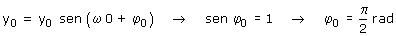
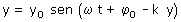
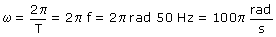
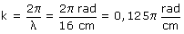
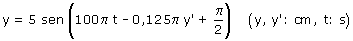

b)
Para empezar hay que establecer la ecuación de la perturbación en el foco.
Como la onda que se origina es logitudinal, la perturbación deberá ser en la dirección de propagación (Eje OY):

Ahora hay que determinar la fase inicial:
Datos: t = 0, y = y0 (Máxima elongación), Incógnita: φ0

Se veía venir: si la elongación inicial es la máxima positiva, la fase inicial tendrá que ser: π/2
Esta fase inicial del foco se añade directamente a la fase espacio-temporal de la onda, resultando:

El signo negativo en la fase indica que la onda se propaga en sentido de y creciente
Parámetros de la onda:
| Amplitud: |
5 cm |
| Frecuencia angular: |
 |
| Constante de propagación: |
 |
La ecuación de la onda será:

La onda es longitudinal: se propaga a lo largo del eje vertical y cuando llega a un punto de coordenada y' este comienza a oscilar verticalmente modificando su posición en y respecto a su posición de equilibrio, es decir su posición es: y' + y